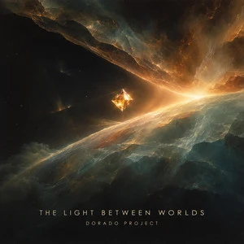

← All releases

SINGLE · ON SPOTIFY · 10:19
The Light Between Worlds
Progressive / Psychedelic Rock
The Light Between Worlds is a 10-minute progressive rock single by Dorado Project, conceived as a spacious, atmospheric musical journey.
Listen on Spotify →
Room for the music to unfold
The creative direction for The Light Between Worlds was a long-form progressive and psychedelic rock piece: an unhurried build, instrumental variety and plenty of space between the vocals. The result is a standalone single lasting 10 minutes and 19 seconds, now available on Spotify.
More from Dorado Project
From synthpop to rock: explore more tracks and the story behind Dorado Project.
Explore all tracks →